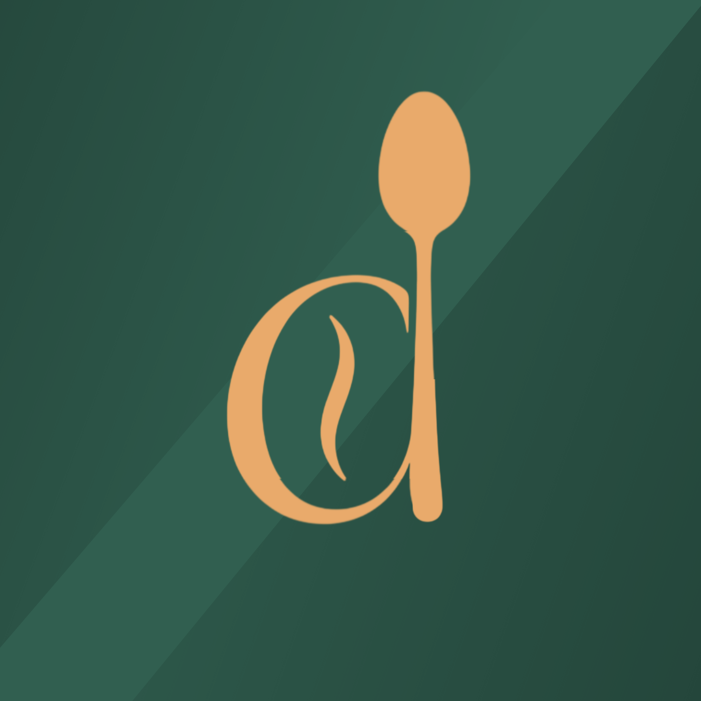

CASHIER SUMMARY
Not saved yetOpening to closing
Opening and closing amounts are based on the denomination counts recorded in the daily DST.

Welcome to the Descanso Daily Sales Tracker. Sign in to record cashier funds, payments, expenses, stock losses, and daily reports.
This workspace is for authorized Descanso staff only.
A clear view of today's sales, expenses, and cashier funds.
| Date | Money received | Expenses | Net sales | Grab net sales |
|---|
Count the money already inside the cashier before the business opens.
Record the order number and the amount actually received in cash.
Record GCash, Maya, bank transfers, or other online payments with their order numbers.
Track each Grab order separately using its order number and order amount.
Record the original order number, refund channel, and amount returned.
Petty cash is optional. Use it only when an expense is paid directly from the cashier because the sales fund is not enough.
Keep a record of discounts granted, including the order number and reason.
Enter payment amounts as the actual amount collected after discounts. Discounts are shown separately and are not deducted twice from net sales.
Record burnt, spoiled, damaged, or discarded food. Recorded losses are deducted from available stock.
Add food items in Inventory first so they appear in this dropdown.
Count the physical cash remaining in the cashier after any cash transfer to the sales fund.
Optional notes about unusual transactions, adjustments, or cashier handover.
| Month | Daily DST records | Money received | Expenses | Net sales | Grab net sales |
|---|
| DST date | Opening cash | Money received | Expenses | Net sales | Grab net sales |
|---|
Export a JSON backup before changing devices. Restoring a backup merges daily records by date and transaction ID instead of duplicating them.
| Food / stock item | Current stock | Unit | Unit cost | Low-stock level | Restock |
|---|
To restock, enter the additional quantity in the Restock column. Historical losses remain recorded in their original daily DST.
Choose the black-and-white default or any of the 50 original Descanso palettes. Your selection is saved on this device.
These settings are saved with your private tracker and can be changed whenever the business needs them.
This is only a suggested default. You can change the amount separately for every daily DST.